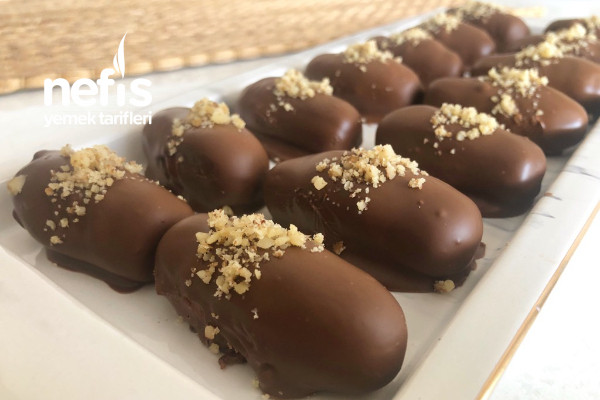

Tarifin Hikayesi
Herkese merhabalar👋 Bugün sizlere az malzemeyle çok kısa sürede hazırlayabileceğiniz nefis bir tatlı tarifiyle geldim💯
Çikolatalı lezzetleri sevenler bu tarifi kesinlikle denemeliler👌 Hemen yapımına geçelim👇👇👇
Kaç kişilik: 4-6 kişilik Hazırlık süresi:10 dakika
